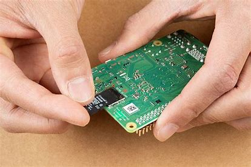

Connecting Volumio to Wi-Fi
What’s happening here
On first boot, Volumio creates its own temporary Wi-Fi access point so you can connect to it and configure your network settings.
This guide walks you through powering up the system, connecting to Volumio’s Wi-Fi hotspot, and completing the initial setup.
Step 1: Install the IQaudio DAC HAT

- Ensure the Raspberry Pi is powered off and unplugged
- Carefully attach the IQaudio DAC HAT to the GPIO header
- Secure it using the small bolts supplied with the DAC
Don’t skip the bolts — they help keep the DAC aligned and prevent poor connections.
Step 2: Insert the SD card
Insert the microSD card (with Volumio already installed) into the slot on the underside of the Raspberry Pi.
Step 3: Power up

Connect the power supply to the Raspberry Pi and allow it to boot.
The first boot can take a couple of minutes — this is normal.
Step 4: Connect to Volumio’s Wi-Fi access point
- Wait a few minutes for Volumio to start its Wi-Fi hotspot
- Look for a network named Volumio or Volumio-XXXX
- Connect to this network using your phone, laptop, or PC
Once connected, Volumio will guide you through connecting the system to your home Wi-Fi network.
Have your Wi-Fi password ready — that’s all it’s really asking for.
Step 5: Access the Volumio web interface

Open a web browser and go to one of the following addresses:
- http://volumio.local
- http://192.168.211.1
This will load the Volumio web interface and complete the setup.
Find Volumio’s IP address
In the Volumio interface, click the menu icon (three lines, top left) and navigate to Network.
Make a note of Volumio’s assigned IP address — you’ll need this later.
Enable the DAC in Volumio
Open the menu and go to Playback Options.
- Enable I²S DAC
- Select IQaudio DAC Plus from the dropdown
- Click Save
If you don’t hear any sound later, this is the first place to check.
Add a music source
Volumio needs a music source before it can play anything.
- USB stick or external hard drive
- Network share
- Streaming services such as Qobuz or TIDAL
For initial testing, streaming from Qobuz or TIDAL is the quickest way to confirm everything is working.
Connect the DAC to your system
Connect the DAC outputs to your amplifier as normal.
If nothing is coming from your speakers, don’t start dismantling your system — check cables, power, and that Volumio is playing and the correct DAC is selected.